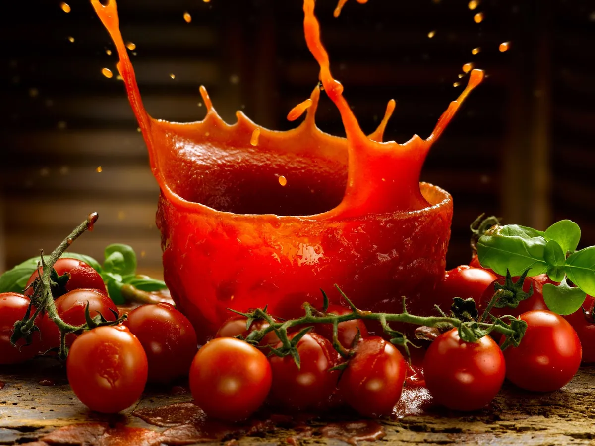
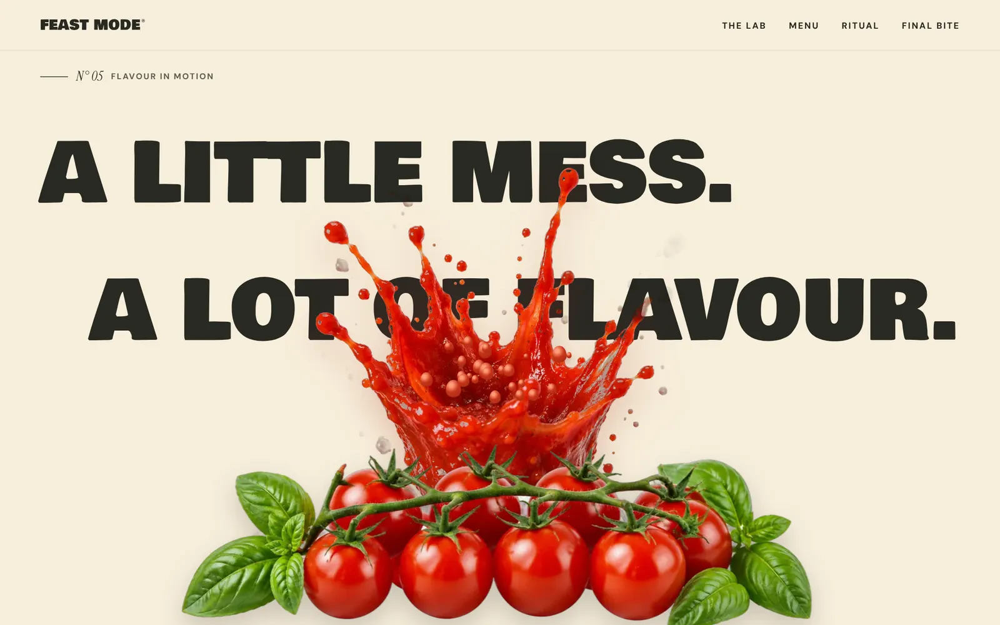

N° 05 Flavour in Motion
Reference → finished scene

KeptThe sauce crown, glowing droplets, and the vine tomatoes and basil at the base.
ChangedThe headline is split across the frame. The single image became three acts: eruption, flood and reveal. The flood uses separate sauce colours, never the UI red.
 Herb green
Herb green Tomato red
Tomato red